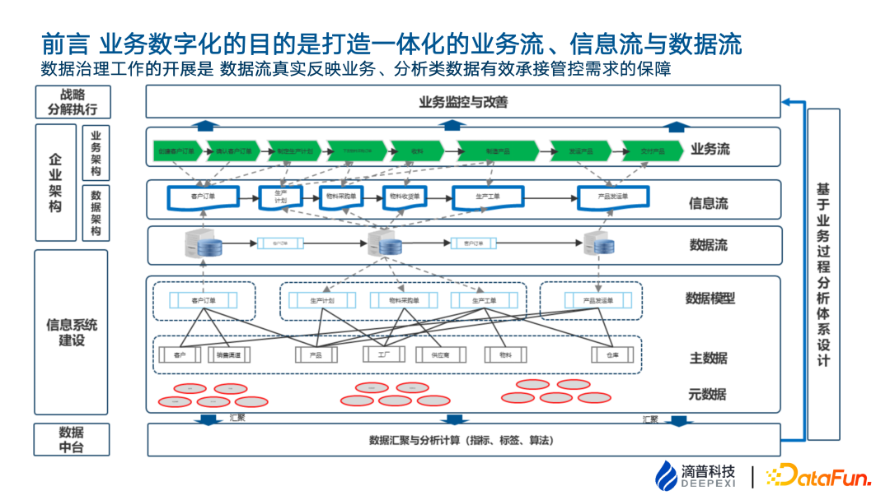
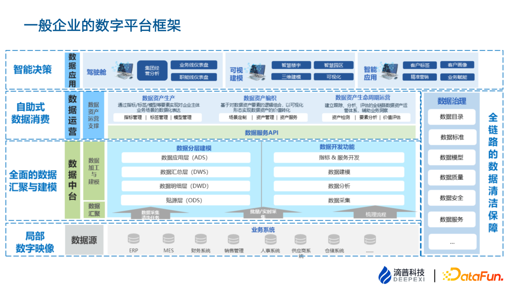
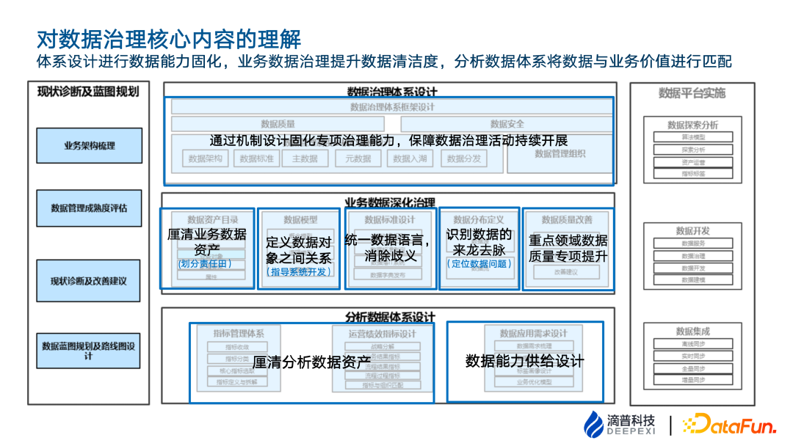
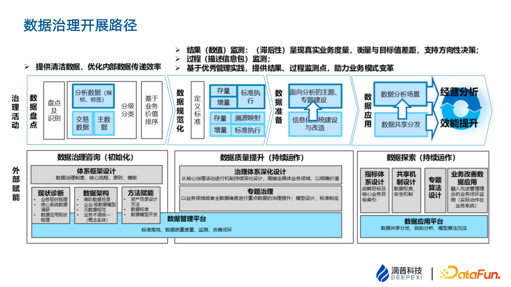
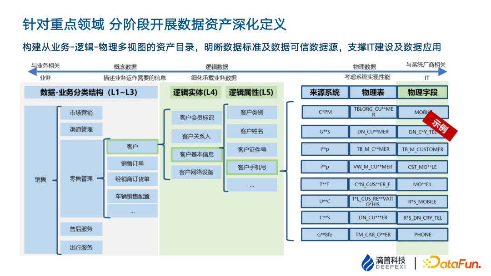
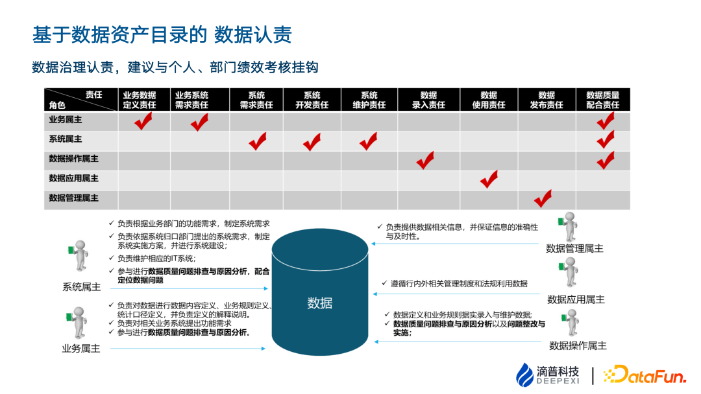
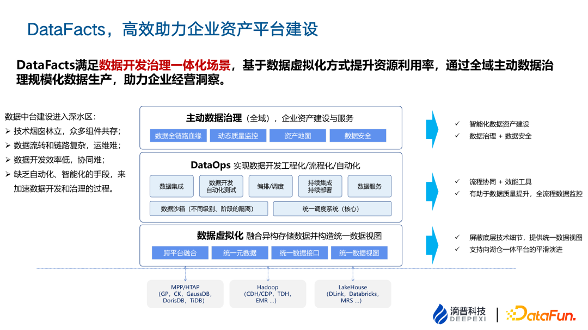

数据治理体系建设与实践
转自公众号：DataFunTalk
http://mp.weixin.qq.com/s?__biz=MzU1NTMyOTI4Mw==&mid=2247643870&idx=1&sn=6d7ee656e04c0df889be11e45038bb5d

01
1. 业务数字化的目的是打造一体化的业务流、信息流与数据流

从企业整体经营管理的角度，战略制定及分解—领域业务目标制定—业务方案设计—业务需求识别 & 信息系统功能及数据库设计—数据汇聚及分析—业务目标监测及改善，这个过程会有层层信息耗散，全局数据治理的目的就是利用体系机制保障最大程度减少这个耗散或补足耗散的部分，让数据尽可能的还原企业的业务事实。
企业在 IT 规划过程中，首先会做业务流梳理，表现为流程架构、价值流或者能力框架；业务流中的相关信息流转，如表、证、单、书等，称之为信息流；信息流中识别出数据对象，梳理数据关系，可以指导数字化系统建设。
但是企业在实际开展数字化过程中，人力资源、采购、生产、研发等每个领域都会有数字化诉求。业务人员和 IT 人员通过分析应用诉求，把业务流转和应用需求相结合，进行数据设计，进而形成新系统。因为 IT 建设是逐步开展的，业务人员的视角不同，实施人员和数据开发人员的理解各异，最终每个系统都会对数据有自己的局部理解，因此简单的把人力资源、采购、生产、研发等存量信息系统里面的数据拼到一起，是无法构建出反映企业业务本质的数据流或者数据孪生模型的。
数字化的数据如果无法反映业务全貌，那基于这些数据进行加工也不可能得到正确的结果，因此需要通过对业务的理解进行数据治理。
数据治理是从业务流到信息流、数据流、数据库表的流转。业务系统中的物理表字段，哪怕短期内由于无法改变业务系统不能完成源头治理，也要在数仓的 ODS 层完成治理，形成能还原业务本质的数据映象。
数据映象描述的是业务过程中的业务细节。企业经营中战略分解到各业务部门的经营目标都会有相关的考核指标。如果数据映象是真实的，那基于指标体系做的业务分析就能更真实反应业务阶段结果，达成企业业务流、信息流、数据流的一致性，支撑企业从战略规划到目标分解的监控，最终实现数据价值的呈现。
总结来说，整个数据治理的核心动作分为两个部分，一个是业务数据的治理（形成真实数据映像），另一个是分析体系的治理（基于数据映像面向管控目标做合理性的分析结构设计及实现）。
2. 典型的企业数字平台框架

典型企业的数字平台框架如上图所示。
（1）业务系统作为局部数据映象或数据源。
（2）数据中台做全面的数据汇聚与建模，数据中台基于贴源层、明细层、汇总层、应用层进行分层，面向分析型需求由开发人员进行数据建模。
（3）自助式数据消费是面向业务分析师或者有一定业务理解能力的开发人员，他们会自助式的基于成熟的模型进行组装式的开发。
（4）智能决策包括驾驶舱、可视建模和智能应用等。
从业务数据系统的数据源到分层的数据建模以及数据消费的全过程，需要一系列的管理机制，包括数据标准、数据模型、数据质量以及管理流程和机制，形成了一套体系化、规范化的方法，保证整个链路的畅通。
3. 对数据治理核心内容的理解

滴普对理解的数据治理核心内容包括三块：数据治理体系设计，业务数据深化治理，分析数据体系设计。
（1）数据治理体系设计
数据治理体系设计主要涉及数据架构、数据标准、主数据等该如何进行治理动作管理。首先基于业务系统和分析系统现状，梳理一套机制并把该机制固化起来，但这只是一套文档和理想态机制，需要与业务数据及分析数据体系的实际开展动作进行结合细化；同时建立联合团队一起进行一些专业性的数据治理活动，如建立数据目录、数据标准等，构建数据管理内容的同步将能力转移并固化在甲方身上。本质上是通过体制机制、流程文件去固化企业的专项数据能力，以将数据治理作为一项持续性的工作开展下去。
当然也会涉及到数据管理组织的设计，组织设计是相对可大可小的事情，因为会涉及到数据资产权限，业务部门，IT 部门等平台部门。
（2）业务数据深化治理
这部分包括几个比较核心的工作：
第一、 数据资产目录
梳理方法上有自上而下、自下而上两个方向。
自上而下：基于业务链条去识别每一个业务领域，比如制造、研发、生产、采购等的关键信息，这些信息有可能已经在 IT 系统有留存，也有可能是一个线下纸质的表单。数据资产目录构建要描述企业全部数据要素，但是系统的建设一定是落后于企业的管理诉求的，所以不能只是梳理企业既有的 IT 平台里的数据要素，需要基于整个业务链条去梳理企业的数据要素，构建数据资产目录、进行分级分类。
自下而上：因为单纯基于业务链条有些业务细节可能会被忽略，所以需要基于存量的 IT 系统的数据库表进行盘点和映射作为补充。
通过自上而下从业务出发，自下而上从数据库表出发，可以得到相对近似于企业数据资产全貌的数据资产目录。数据资产目录厘清了企业的业务数据资产，它有两个用途：
① 构建业务友好的数据地图。数据资产结构划分是基于业务线构建的，会形成对业务非常友好的可视结构。不论是当前 IT 系统的库表结构，还是识别出的数据对象实体以及未来的指标标签都可以和它进行关联。可以给业务人员提供友好的数据资产入口，同时支撑高阶的数据分析人员及数据开发人员找数。
② 划分责任田。如果企业是自上而下进行业务梳理的，会有从业务域到业务子域到整个业务对象的目录映射，可以很容易的找到每一个数据的责任人，当出现一些数据标准、跨领域的数据争议的时候，可以起到划分责任田的作用。
第二、数据模型
通过数据目录可以知道有多少数据资产，通过数据模型可以知道数据对象之间的关系。
数据模型包括概念模型、逻辑模型和物理模型。治理项目初始完成概念模型，只有对象和对象之间的关系，后续需持续进行逻辑模型的建设（加入主外键、关键属性）。在做专题的主数据治理需要实现数据清洁干净，提升质量，其中深化的逻辑模型设计是其重要支撑。
第三、数据标准设计
数据标准应该是面向未来的业务需求去设计的，其不只是存量的字段长度、表结构，还包括业务规则、业务含义、业务的管理角色等相关标准。有的数据标准是面向增量数据结构的，比如可以用数据标准去约束数仓内的增量的数据变更或者新增的 IT 系统的数据结构。但是对于存量系统来说，其数据结构可能和数据标准存在差异，如果强制存量 IT 系统修改，短时间是不可行的，通常可以通过建立映射关系解决，以兼顾业务连续性需求及面向未来业务的合理性。
第四、数据分布定义
盘点数据标准在存量的业务系统包括数仓内的分布情况。有些分布会极其复杂，如有的制造业企业有七八十个系统，每个系统各管一个业务段，数据分布相当繁杂，可能单一属性分布在十几个系统和几十张表中。
识别完数据分布以后，还要识别可信数据源。比如从 20 个数据源里面定义 TOP5 的可信数据源，TOP5 的可信数据源里面，可能建立交集、并集、筛除等关系。
第五、数据质量改善
开展专项数据治理，一方面是标准比对；另一方面，对主数据和主数据相关的重要交易数据做关键属性洞察。
通过业务资产梳理，可以收集业务人员以及 IT 人员遇到的问题和困难，并对其进行根因分析，制定数据探查的规则以识别数据问题。再进一步分析这些问题到底是业务问题、数据流转的问题、系统应用功能问题，还是数据结构和数据标准本身执行不到位的问题，并给出改善建议。如短期内通过映射关系解决，长期内希望通过业务及数据管理动作进行改善，因为业务及数据管理动作才是数据质量产生的源头。
（3）分析数据体系设计
分析数据体系分为两个部分。
第一、厘清分析数据资产
包括两部分：
① 指标管理体系。首先做存量分析建设，存量就是各个业务部门已经在使用的系统、报表、指标，同一个指标可能有多个部门在用。将这些指标收集起来，做结构化、标准化，包括指标的聚合、收敛、规则定义，叫做指标存量标准化设计。
② 运营绩效指标设计。如果企业本身处于管理变革阶段，单个领域业务方向的变化会牵引出新的考核体系。可以基于前瞻性的考核体系设计一套指标体系，牵引管理变革落地的方向。另外，一些行业实践的成套体系的指标可以借鉴（例如 IPD、MTL），进行企业内部管理的优化，这些内容属于运营绩效指标设计。
第二、数据能力供给设计
分析数据体系除去指标，还有比如标签、算法模型，如制造业的库存优化分析等算法模型、车联网的充电模型等高阶数据应用的设计，定义为数据能力供给设计。
4. 数据治理开展路径

数据治理开展路径，有如下的两部分组成：
第一部分，治理活动。
首先以数据盘点为切入点，形成覆盖企业业务全域的数据资产地图。数仓一般是按照 FSLDM 模型的理念构建，虽然对于开发人员非常友好但是对业务的可读性相对较低，必须基于业务友好的视角做数据盘点和建立高可读性的资产地图。
资产地图首先需要做资产的价值排序和痛点排序以确定哪些资产优先治理。排序有两种视角，一种是按主题，比如客户主数据，供应商主数据以及和它相关的重要的数据；还有一种是按业务域，比如采购域、生产域、财务域。
资产地图的进一步的治理是做标准化、质检改善。以采购域为例，做采购域的数据标准的设计，做存量和增量的映射和规则的执行。完成后，单域的数据质量和清洁度都得到提升，然后基于数据标准约束信息系统的改造。从分析侧来说，前端数据整合规则的高质量定义可以极大的减轻定位数据、ETL 清洗、ODS 层到明细层的设计工作。
最后一步是数据的共享分发和数据分析场景的建设。共享分发可以是基于原生的业务形态、业务系统数据的分发，也可以是指标、报表、标签的分发。
第二部分，外部赋能。
首先搭建数据治理体系框架。第一步建立组织，比如先找到资产管理员、数据平台管理员、业务分析师这样三个角色，就可以启动一些核心的活动，把相关的制度模板，如数据共享、数据权属设计、增量数据的标准约束和审批流程等体系框架搭建起来。
数据治理体系框架搭建后，进行数据资产的盘点，完全域数据资产盘点是迭代更新的过程。数据资产是为了反映业务的数字映像，因为业务会发生变化，所以需要沉淀能力形成一套方法和模板。后面每隔一定时间迭代一次，根据业务环节产生的业务变化刷新资产目录。
有了体系框架、数据架构和方法赋能，就可以开展重点专题的治理，比如从 L3 业务对象（概念实体）的识别，到逻辑侧及物理侧的映射，最后在价值呈现上做指标算法、数据共享机制构建（需要数据管理平台和数据应用平台支撑）。
5. 业务数据治理工作的起点-数据资产盘点
数据治理工作的核心抓手是数据资产，所有的标准、质量、安全都是构建在数据资产上面的。
以某制造业数据资产盘点为例，它的生产过程，从新产品导入、生产计划、制造过程，工艺管理、物流仓储交付到产品退货，构成了生产域。通过生产运营的业务活动识别出关键的信息对象，称为业务对象。
L1 可以复制企业的自然职能领域，如果企业的流程 IT 部门有业务架构或者是流程架构，可以直接参考其结构，便于业务人员的感知；L2 基于每个业务过程识别出来对象进行偏向于数据本身的聚合，既考虑业务可识别性，又考虑数据本身的聚合性。
在梳理资产目录过程中，根据对象和业务的关系可以比较粗颗粒的画出对象之间的关系，称为概念模型，它仅有 1：1、N：N、 1：N 的三种关系，不承载实体和属性。基于概念模型，我们可以衍生出细分领域的逻辑模型和物理模型设计。
存量信息系统中，有了数据资产目录和数据之间的关系后，还需要统计数据在信息系统之间的分布以及数据在整个业务域的流向图。
数据资产盘点是整个数据工作的核心抓手和起点。
6. 针对重点领域-分阶段开展数据资产深化定义

数据资产目录到 L3 层是业务分类结构，如上图从销售、零售管理到客户，是业务人员一看就明晰的结构。
但 L3 层是一个偏概念性的东西，需要填充更多的属性形成逻辑实体。也就是将概念实体切割成逻辑实体和逻辑属性。
再往下就是物理表的映射。逻辑实体和存量的物理表的区别在于，逻辑实体在业务侧承载更多的业务细节，但是系统表的数据结构设计还有性能上的考虑，数据库的性能、读写的性能、以及冗余字段。
7. 基于数据资产目录的数据认责

不论是数据平台还是数据资产的目录结构，都会关心数据资产认责，数据的所有者是谁，数据的变更需要找谁，需要进行相应角色的定义，比如业务数据的定义责任人，系统管理责任人，数据录入责任人，并形成类似这样一个矩阵表。
责任人的认定，在业务数据，到属性级别是比较理想的颗粒度。但是属性级别设置责任人可能设置工作比较繁重，所以实际在开展的时候，一般会在 L3 层设置它的管理权责。如果短时间内涉及到一些比较复杂、跨领域的数据，或者权责难以厘清的数据，我们可以再往上推到 L2 层去定义，后续看情况再细化。
8. 数据治理的落地平台支撑

以上是数据治理的开展路径以及核心的数据资产工作部分。数据资产目录设计、数据模型、数据标准，这些数据管理动作需要有一个 IT 平台去落地，滴普提供一站式的数据智能服务的平台，包括从数据集成到数据治理（数据标准、数据质量、数据安全等），数据资源的开放和共享。
02
数据治理实践
下面是一些案例的介绍。
1. 某食品加工企业报表应用驱动的数据治理咨询交付路径
客户的 CIO 本身有多年头部咨询公司的 IT 咨询规划经历，对企业信息化及数据管理有比较深的理解，为了兼顾企业长期的数据治理能力构建及中短期的业务价值体验，所以这个项目就分成了两个部分。
（1）数据治理体系设计。包括现状诊断及体制机制设计，以及前面讲到的数据目录构建、标准设计，属于业务数据治理。
（2）指标体系的设计。指标体系对比较核心的管理部门，做全量指标体系的盘点和结构化、标准化的设计。针对某一个比较强势有价值承接的业务板块，做指标的定义和拆解，在物理表上做面向大屏的主题专题库的设计。
这里可以理解为两块，一块用来在业务侧呈现价值，另一块是通过数据定义和设计去支撑指标的高质量实现。这样既实现了业务部门可感知的价值，又实现了 IT 部门基于长远考虑的夯实数据治理基础目的。
2. 某制造企业数据治理的起点-数据盘点 & 治理体系设计
该制造企业是一个整车制造商，这些年做了很多数据治理的项目，这个体系设计&数据盘点项目是他们整个体系的起点。
在项目之前，客户做过主数据项目一期，但是他们比较关心的客户主数据，主数据下面是有数据标准、数据模型，包括全链路的数据关系。两三年后，企业的系统变了，业务也发生一些变化，以前做的主数据就有了很大的偏差。需要一套数据治理体系进行持续数据治理运营，所以就启动了这个数据规范化的项目。
客户在这个项目做两件事，一个是数据治理标准化体系构建，包括标准设计、模型构建、数据质量管理、流程和组织设计等。还有一个是数据目录设计，做全公司范围的数据资产盘点到 L3 级的业务对象，作为后续数据治理持续开展的路径和索引。
还有一块比较核心内容，不属于数据治理范畴。因为这家企业是没有流程 IT 部门的，IT 负责人之前对业务全貌和整体流向一直不是很清楚。我们帮助企业基于对现有业务的理解做了一个业务全景图。但是这个项目到最后，CIO 非常关心这个业务全景图，以此看到从业务全景图到数据的映射，也可以指导每年的 IT 规划。